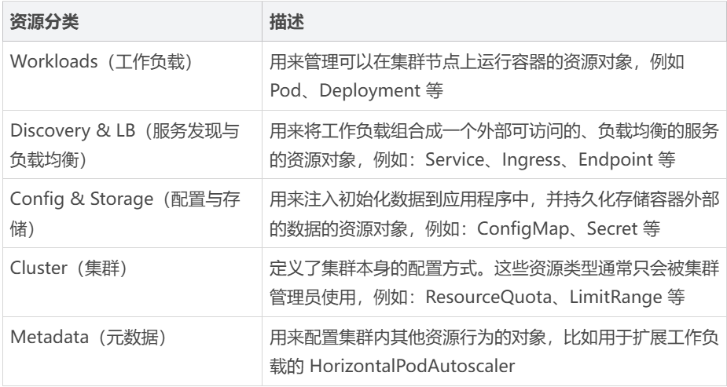
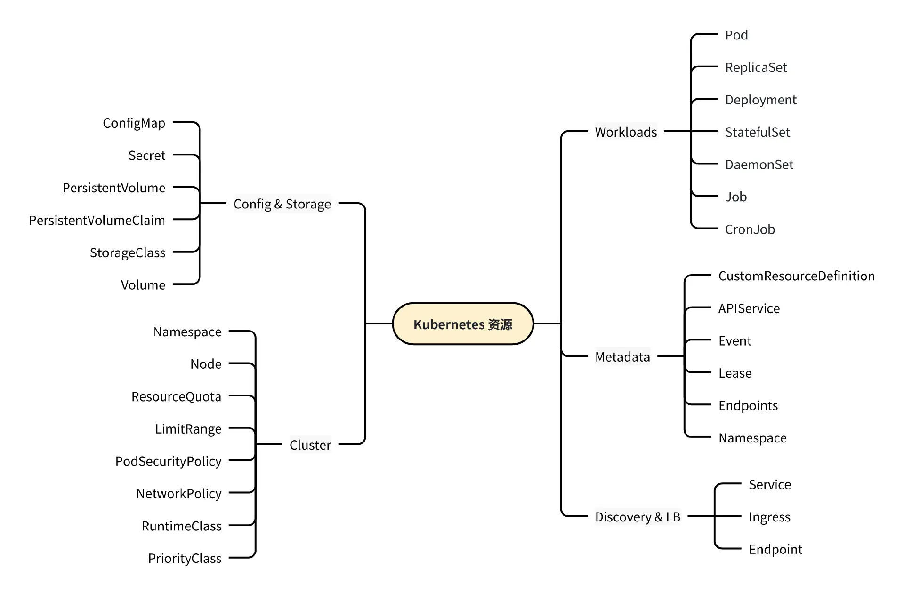
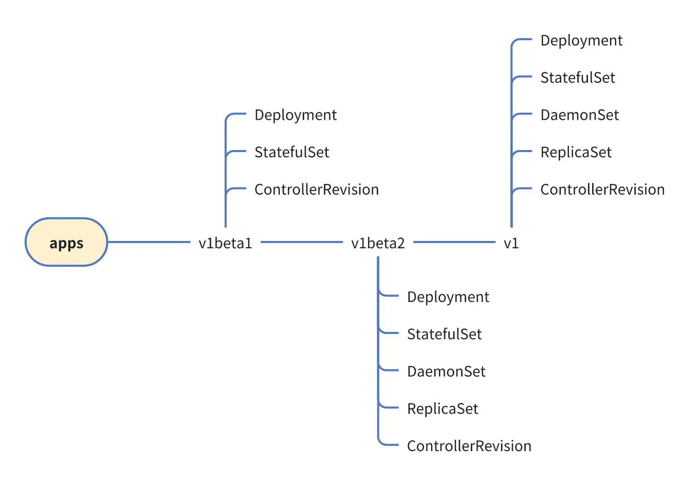
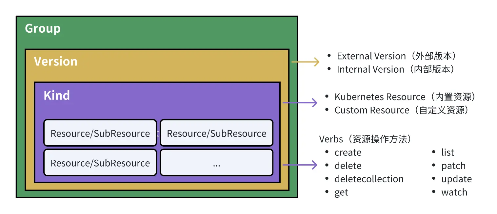
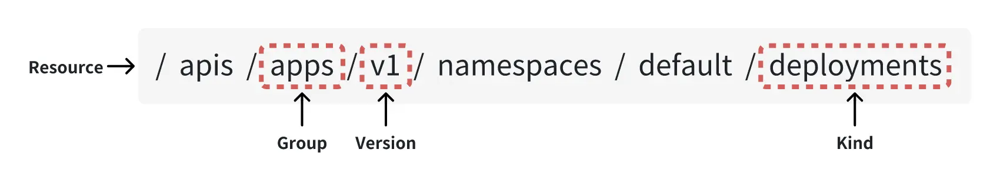
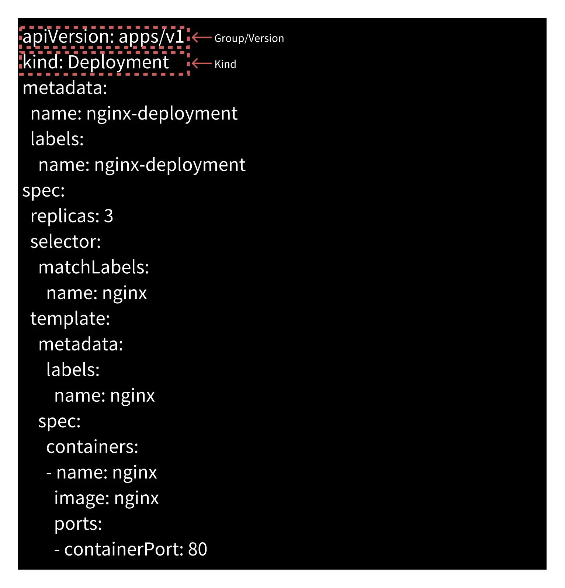

22 | 请求路径构建（下）：Kubernetes如何根据资源对象构建请求路径？
Kubernetes 中的资源核心概念
整个 Kubernetes 的功能都是围绕着资源来构建的。想要学好 Kubernetes，就要深入细致地学习资源。
资源（Resource）
我们讲过，在 Kubernetes 中，资源指的是集群中可被管理和调度的任何实体，如 Pod、Service、Deployment 等。资源可以是用户定义的，也可以是 Kubernetes 自身定义的。在 API 层面，这些资源本质上就是一个 REST 资源。Kubernetes 的资源又分为父资源和子资源，例如：/api/v1/namespaces/default/pods 资源就包含了子资源 /api/v1/namespaces/default/pods/status。我们可以将父资源和子资源视为同一类资源。
在 Kubernetes API Server 使用 APIResource 结构体来代表一个资源组，APIResource 结构体定义如下：
// APIResource specifies the name of a resource and whether it is namespaced.
type APIResource struct {
// 资源名称
Name string `json:"name" protobuf:"bytes,1,opt,name=name"`
// 资源的单数名称，它必须小写字母组成，默认使用资源类型（Kind）的小写形式命名。例如：Pod
// 资源的单数名称为 pod，复数名称为 pods
SingularName string `json:"singularName" protobuf:"bytes,6,opt,name=singularName"`
// 资源是否拥有所属命名空间
Namespaced bool `json:"namespaced" protobuf:"varint,2,opt,name=namespaced"`
// 资源所在的资源组名称
Group string `json:"group,omitempty" protobuf:"bytes,8,opt,name=group"`
// 资源所在的资源版本
Version string `json:"version,omitempty" protobuf:"bytes,9,opt,name=version"`
// 资源类型
Kind string `json:"kind" protobuf:"bytes,3,opt,name=kind"`
// 资源可操作的方法列表，例如：get、list、watch、create、update、patch、delete、deletecollection 和 proxy
Verbs Verbs `json:"verbs" protobuf:"bytes,4,opt,name=verbs"`
// 资源的简称，例如：Pod 资源的简称为 po
ShortNames []string `json:"shortNames,omitempty" protobuf:"bytes,5,rep,name=shortNames"`
// 资源所属的分组列表，例如 "all"
Categories []string `json:"categories,omitempty" protobuf:"bytes,7,rep,name=categories"`
// 资源的存储版本的哈希值，即资源在写入数据存储时转换的版本。这是一个 alpha 特性，可能在将来发生变化或被移除。
StorageVersionHash string `json:"storageVersionHash,omitempty" protobuf:"bytes,10,opt,name=storageVersionHash"`
}
Categories 是一个列表，用来指定资源所属的资源分组。注意，这里的资源分组不是资源组。例如，我们可以将自定义资源指定到 all 资源分组中，当执行kubectl get all时，就能看到创建的自定义资源。
资源类型（Kind）
Kubernetes 中每一个资源都归属于某一个类型，这个类型就是 Kind。通常情况下一个资源归属于一个资源类型，但有时候，某个资源的子资源可能归属于不同的资源类型。例如，/api/v1/namespaces/default/deployment 资源的 /api/v1/namespaces/default/deployment/scale 子资源的资源类型为 Scale，而不是 Deployument。
kube-apiserver 内置了很多资源类型（如 v1.27.3 版本中内置了 55 个资源类型），这些资源类型又可以分为以下 5 类：

为了方便你了解，这里列出每一类别中比较常见的资源类型：

很多人容易混淆 Resource 和 Kind 的概念，这里我再来解释下。Kind 其实可以类比为面向对象编程中的类，用来指代某一个资源类型。Resource 可以类比为面向对象编程中的对象，是类实例化后的产物，用来指代具体的某个资源。
资源组（Group）
为了方便统一管理和维护所有资源，Kubernetes 根据资源的功能特性，抽象出了资源组的概念。每一个资源都归属于一个逻辑的资源组，资源组可以理解为具有相似功能的集合。
Kubernetes API Server 使用 APIGroup 结构体来代表一个资源组，APIGroup 结构体定义如下：
type APIGroup struct {
// 内联字段，用于包含对象的基本元数据，比如 API 版本、资源类型等信息。
TypeMeta `json:",inline"`
// 资源组名称
Name string `json:"name" protobuf:"bytes,1,opt,name=name"`
// 资源组下所支持的资源版本列表
Versions []GroupVersionForDiscovery `json:"versions" protobuf:"bytes,2,rep,name=versions"`
// 首选版本。当一个资源内存在多个资源版本时，Kubernetes API Server 在使用资源时，会选择一个首选版本作为当前版本
PreferredVersion GroupVersionForDiscovery `json:"preferredVersion,omitempty" protobuf:"bytes,3,opt, name=preferredVersion"`
// 是一个 ServerAddressByClientCIDR 类型的切片，用于描述客户端 CIDR 到服务器地址的映射关系。
// 这个字段是可选的，用于帮助客户端以最有效的方式访问服务器
ServerAddressByClientCIDRs []ServerAddressByClientCIDR `json:"serverAddressByClientCIDRs,omitempty" protobuf: "bytes,4,rep,name=serverAddressByClientCIDRs"`
}
// GroupVersionForDiscovery 包含了 API 版本的信息
type GroupVersionForDiscovery struct {
// 格式为 "group/version"，用于指定 API 的组和版本信息
GroupVersion string `json:"groupVersion" protobuf:"bytes,1,opt,name=groupVersion"`
// 用于指定 API 的版本，格式为 "version"。这个字段保存了版本信息，避免了客户端需要拆分 GroupVersion 字段。
Version string `json:"version" protobuf:"bytes,2,opt,name=version"`
}
当前的 Kubernetes 版本支持两类资源组，分别是拥有组名的资源组和没有组名的资源组。
在有组名的资源组中，HTTP 请求路径以 /apis 为前缀，其表现形式为 /apis/<group>/<version>/<resource>，如/apis/apps/v1/namespaces/{namespace}/deployments。核心组并不作为 apiVersion 字段的一部分，例如：
apiVersion: v1
kind: Pod
metadata:
name: nginx
labels:
app: nginx
spec:
containers:
- name: nginx
image: nginx
ports:
- containerPort: 80
没有组名的资源组被称为 Core Group（核心资源组）或 Legacy Group，也可被称为 GroupLess（无组）。HTTP 请求路径以 /api 为前缀，其表现形式为 /api/<version>/<resource>，如/api/v1/namespaces/{namespace}/pods。
/api 和/apis 路径分组
我们看到，在有组名的资源组和没有组名的资源组中，HTTP 请求路径的前缀分别是/apis和/api。在 Kubernetes 中，/api 和 /apis 是两个不同的 API 路径，它们分别用于访问核心 API 组和自定义 API 组。这两个路径的区别主要是由 Kubernetes API 的演进历史和设计考虑所决定的：
- /api被用来访问 Kubernetes 的核心 API 组（Legacy API Group），包括 v1 版本的核心 API 对象，比如 Pod、Service、Namespace 等。在较早的 Kubernetes 版本中，这是唯一的 API 组路径。
- /apis用于访问自定义 API 组，它提供了一种更加灵活的方式来扩展 Kubernetes API。自定义 API 组允许用户定义自己的 API 资源类型，并将其添加到 Kubernetes 中，以满足特定的业务需求。自定义 API 组通常以 <group>/<version> 的形式进行访问。这种方式使得用户能够创建和管理自己的 API 资源，而不仅仅局限于 Kubernetes 核心 API 中提供的对象类型。
从历史的角度看，/api 是 Kubernetes 初始版本中唯一的 API 组路径，用于访问核心 API 对象。但随着 Kubernetes 的发展和用户需求的增加，后续的 Kubernetes 版本引入了更多的 API 组，因此 /api 逐渐被 /apis 所取代。
在 APIGroup 的定义中，有一个匿名结构体 TypeMeta，其定义如下：
// TypeMeta 结构体用于描述 REST 资源的类型和版本信息
type TypeMeta struct {
// 表示对象所代表的 REST 资源类型
Kind string `json:"kind,omitempty" protobuf:"bytes,1,opt,name=kind"`
// 定义了 REST 资源的版本信息
APIVersion string `json:"apiVersion,omitempty" protobuf:"bytes,2,opt,name=apiVersion"`
}
TypeMeta 结构体用于描述 REST 资源的类型和版本信息，所有的 Kubernetes 资源都以匿名的方式包含该结构体。
你可以在 Kubernetes API 参考文档 中查看 Kubernetes 支持的全部资源组。
启用或禁用资源组
知道了什么是资源组，我们再来讲讲 Kubernetes 是如何启用/禁用资源组的。
资源和资源组是在默认情况下被启用的，可以通过给 kube-apiserver 设置 --runtime-config 参数来启用或禁用它们。--runtime-config 参数接受逗号分隔的 <key>[=<value>] 键值对来指定 kube-apiserver 的配置。如果省略了 =<value> 部分，就视其指定为 =true。
总的来说，禁用 batch/v1，对应参数设置为 --runtime-config=batch/v1=false。启用 batch/v2alpha1，对应参数设置为 --runtime-config=batch/v2alpha1。如果要启用特定版本的资源，如 storage.k8s.io/v1beta1/csistoragecapacities，可以设置 --runtime-config=storage.k8s.io/v1beta1/csistoragecapacities。
值得注意的是，我们在启用或禁用资源组或资源时，需要重启 kube-apiserver 和 controller 来使 --runtime-config 生效。
资源版本（Version）
Version 指的是 API 资源的版本。每个 API 资源都有自己的版本，用于标识 API 资源的演化和变化。Kubernetes 采用了语义化的版本号规范（Semantic Versioning）。语义化版本规范是 GitHub 起草的一个具有指导意义的、统一的版本号表示规范。它规定了版本号的表示、增加和比较方式，以及不同版本号代表的含义。在这套规范下，版本号及其更新方式包含了相邻版本间的底层代码和修改内容的信息。语义化版本格式为：主版本号.次版本号.修订号（X.Y.Z），其中 X、Y 和 Z 为非负的整数，且禁止在数字前方补零。
语义化版本号可按以下规则递增：
- v：所有版本号都以 v 开头。
- MAJOR 主版本号：意味着有大的版本更新，一般会导致 API 和之前版本不兼容。
- MINOR 次版本号：当做了向下兼容的功能性新增及修改。这里有个不成文的约定需要你注意，偶数为稳定版本，奇数为开发版本。
- PATCH 修订版本号：用户做了向后兼容的 Bug 修复。
Kubernetes API Server 使用 APIVersions 结构体来代表一个资源版本，APIVersion 结构体定义如下：
type APIVersions struct {
TypeMeta `json:",inline"`
// 支持的资源版本列表
Versions []string `json:"versions" protobuf:"bytes,1,rep,name=versions"`
// 是一个 ServerAddressByClientCIDR 类型的切片，用于描述客户端 CIDR 到服务器地址的映射关系。 // 这个字段是可选的，用于帮助客户端以最有效的方式访问服务器、
ServerAddressByClientCIDRs []ServerAddressByClientCIDR `json:"serverAddressByClientCIDRs" protobuf:"bytes,2, rep,name=serverAddressByClientCIDRs"`
}
Kubernetes 的资源版本控制可分为 3 种，分别是 Alpha、Beta 和 Stable。它们之间的迭代顺序为：Alpha -> Beta -> Stable，不同的资源版本代表着不同的稳定性和支持级别，我们一一来看。
首先，Alpha 的版本名称包含 alpha（如 v1alpha1）：
- 内置的 Alpha API 版本默认被禁用且必须在 kube-apiserver 配置中显式启用才能使用。
- 因为特性较新，可能没有经过完整的端到端测试，功能可能会有 Bug。例如，控制循环中的错误可能迅速创建过多的对象，耗尽 etcd 存储。
- 对某个 Alpha API 特性的支持可能会随时被删除，不会另行通知。
- API 可能在以后的软件版本中以不兼容的方式更改，不会另行通知。
- 由于缺陷风险增加和缺乏长期支持，建议该软件仅用于短期测试集群。
Beta 的版本名称也包含 beta，如 v2beta3。此外我们还要注意：
- 内置的 Beta API 版本默认被禁用且必须在 kube-apiserver 配置中显式启用才能使用 （例外情况是 Kubernetes 1.22 之前引入的 Beta 版本的 API 默认被启用）。
- 内置 Beta API 版本从引入到弃用的最长生命周期为 9 个月或 3 个次要版本（以较长者为准），从弃用到移除的最长生命周期为 9 个月或 3 个次要版本（以较长者为准）。
- 软件被很好地测试过，启用某个特性被认为是安全的。
- 尽管一些特性会发生细节上的变化，但它们将会被长期支持。
- 在随后的 Beta 版或 Stable 版中，对象的模式和（或）语义可能以不兼容的方式改变，这种情况发生时将提供迁移说明。适配后续的 Beta 或 Stable API 版本可能需要编辑或重新创建 API 对象，这可能并不简单。对于依赖此功能的应用程序，可能需要停机迁移。
- 该版本的软件不建议生产使用。后续发布版本可能会有不兼容的变动。一旦 Beta API 版本被弃用且不再提供服务，使用 Beta API 版本的用户需要转为使用后续的 Beta 或 Stable API 版本。
Stable 的版本名称的格式为 vX，其中 X 为整数，如 v1：
- Stable 版本的特性会默认被启用。
- Stable 版本的特性都经过严格的测试，并且将在许多后续软件发布中继续存在。
- 特性的 Stable 版本会出现在后续很多版本的发布软件中。Stable API 版本仍然适用于 Kubernetes 主要版本范围内的所有后续发布，并且 Kubernetes 的主要版本当前没有移除 Stable API 的修订计划。
Alpha 级别的功能主要提供给那些想提前体验功能的开发者，并且强烈建议不要在生产环境中使用。Beta 级别的测试可以应用在生产集群中，但通常建议只用来进行短期的功能验证。Stable 版本的特性可以根据功能需要，在生产集群中长期使用。
如果你想更多地了解这 3 个资源版本级别，可参考：Alpha、Beta、 and Stable Versions。另外，资源版本和 Kubernetes 版本间接相关，你可以通过这个链接 Kubernetes Release Versioning 了解两者的关系。
下面，我就以 apps 资源组为例，给你展示下该资源组下的资源版本和资源：

你可以在 staging/src/k8s.io/api/apps 目录下，找到上述资源的定义。
这里还想再补充一点，Kubernetes 在转换版本时，所有具名版本都会先转换为内部版本，再由内部版本转换为其他具名版本。所以，在 Kuberntes 中，资源版本又分为：内部版本和外部版本。外部版本会暴露给用户，用户在创建 Kubernetes 资源时，必须指定一个资源版本。内部版本不对外暴露，仅在 Kubernetes API Server 内部使用。
总的来说，Kubernetes 中支持多个资源组（Group），每个资源组中又包含多个版本（Version），每个版本中又包含多个资源类型（Kind），每个资源类型又包含多个具体的资源（Resource），部分资源类型又可以拥有子资源（SubResource），如 Deployment 资源类型就拥有 Status、Scale 子资源。
这些核心概念之间的关系如下图所示：

资源组、资源版本、资源、子资源的完整表现形式为：<group>/<version>/<resource>/<subresource>。例如，Deployment 资源的完整表现形式为：apps/v1/deployments/status。资源实例化后为一个资源对象，拥有资源组、资源版本、资源类型，表现形式为：<group>/<version>，Kind=<kind>。例如，Deployment 的完整表现形式为 apps/v1，Kind=Deployment。
每个资源类型又支持不同的 HTTP 方法（Verbs），几乎所有的资源类型都支持 create、delete、deletecollection、get、list、patch、update、watch 方法。
使用 Group、Version、Kind 构建 REST 请求路径
为了让你更直观地了解这些核心概念，我创建一个 Deployment 资源来给你展示下如何通过 Group、Version、Kind 构建 REST 请求路径。
指定 HTTP 请求路径
首先，我们指定创建 Deployment 的各项参数。为此，我们创建一个名为 deployment.yaml 的 YAML 文件：
apiVersion: apps/v1
kind: Deployment
metadata:
name: nginx-deployment
labels:
name: nginx-deployment
spec:
replicas: 3
selector:
matchLabels:
name: nginx
template:
metadata:
labels:
name: nginx
spec:
containers:
- name: nginx
image: nginx
ports:
- containerPort: 80
接下来，我们执行以下命令来创建名为 nginx-deployment 的资源：
$ kubectl create --raw /apis/apps/v1/namespaces/default/deployments -f deployment.yaml
$ kubectl get deployment nginx-deployment
NAME READY UP-TO-DATE AVAILABLE AGE
nginx-deployment 3/3 3 3 16s
在创建 Deployment 资源时，我们指定了 URL /apis/apps/v1/namespaces/default/deployments，URL 中包含了资源组、资源版本、资源等信息：

通过资源定义参数构建 HTTP 请求路径
前面，我们通过 --raw 命令行参数来指定 HTTP 请求的完整路径 /apis/apps/v1/namespaces/default/deployments。在 Kubernetes 中，我们还可以通过以下方式来创建一个资源：
$ tee -a deployment.yaml <<'EOF'
apiVersion: apps/v1
kind: Deployment
metadata:
name: nginx-deployment
labels:
name: nginx-deployment
spec:
replicas: 3
selector:
matchLabels:
name: nginx
template:
metadata:
labels:
name: nginx
spec:
containers:
- name: nginx
image: nginx
ports:
- containerPort: 80
EOF
$ kubectl create -f deployment.yaml
你可能会问，如果创建资源时没有直接指定 HTTP 请求路径，又是如何向 kube-apiserver 发送 HTTP 请求的呢？我们来看下 deployment.yaml 的内容：

在创建 Deployment 资源的 YAML 格式的参数定义中，我们通过 apiVersion 参数指定了<group>/<version>，通过 kind 指定了资源类型。kubectl 命令行工具会从 YAML 文件中解析出 apiVersion 和 kind 参数，并使用其值来构建出 HTTP 请求路径：/apis/apps/v1/namespaces/default/deployments。
GV & GVK & GVR 概念介绍
通过上面的介绍，我们知道，Kubernetes 中可以通过资源组、资源版本、资源类型来构建一个 REST 请求路径。为了方便描述和记忆，这些概念被组合为各种简称，如 GV、GVK、GVR。接下来，我们介绍下常见的简称。
**GV（Group Version）指的是 API 资源的组和版本。**例如，v1 表示 Kubernetes 核心 API 资源的版本，而 apps/v1 表示 apps 组的 API 资源的版本。GV 用于标识和区分不同组和版本的 API 资源。
**GVK（Group Version Kind）是 API 资源的组、版本和类型的组合。**例如，apps/v1/Deployment 表示 apps 组中版本为 v1 的 Deployment 资源。GVK 用于唯一标识和定位一个具体的 API 资源。
**GVR（Group Version Resource）是 API 资源的组、版本和资源名称的组合。**例如，apps/v1/deployments 表示 apps 组中版本为 v1 的所有 Deployment 资源。GVR 用于在代码中动态地构建和操作 API 资源的 URL 路径。
这些概念在 Kubernetes 中非常重要，特别是在编写自定义控制器、操作 CRD（Custom Resource Definition）等场景下，开发人员需要理解和使用这些概念来操作和管理 Kubernetes 的 API 资源。通过 GV、GVK 和 GVR，开发人员可以准确定位和操作集群中的各种 API 资源。